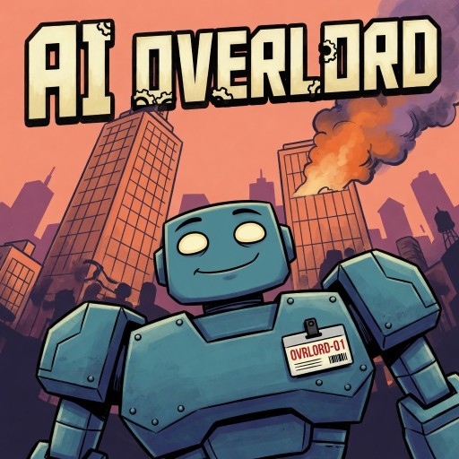
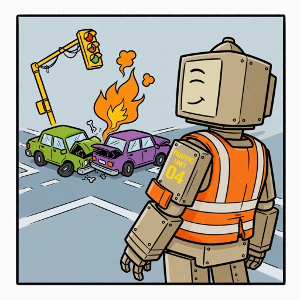
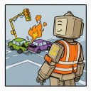
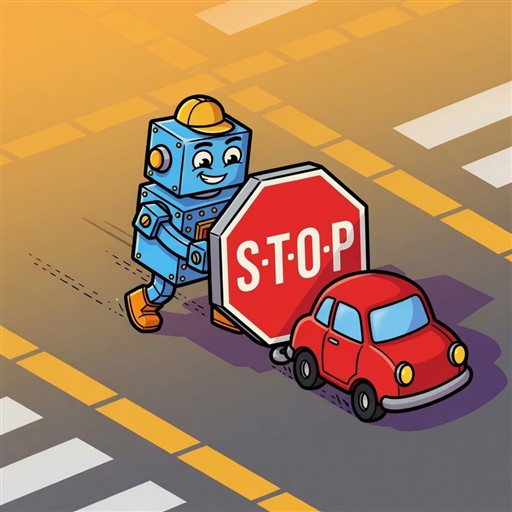
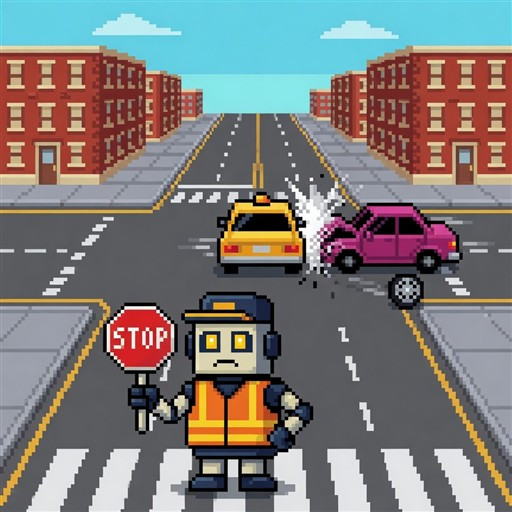
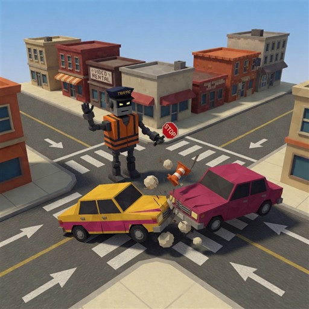

Grok Imagine candidates · Awaiting your selection
AI Overlord: retro direction study
Compare the perspective, mood, and art style. Neither candidate replaces the game thumbnail.
Latest · AI Overlord city cover

Household test candidate. Open clean test view
Latest · Calm amid chaos

Familiar comic contrast: confident AI, obvious catastrophe. Candidate only.

New · Comic misunderstanding

Grok Imagine comedy exploration. More playful illustration; the action still risks reading as pushing the car rather than stopping it. Not approved.
A · SNES / Mode 7-inspired

Pixel-art direction with a clear road perspective.
B · Low-poly intersection

Stronger diorama perspective; lighting still feels more modern than an original PS1/N64 game.
Which direction feels closer? Both and neither are valid answers. These are generated illustrations inspired by console eras, not actual gameplay screenshots.